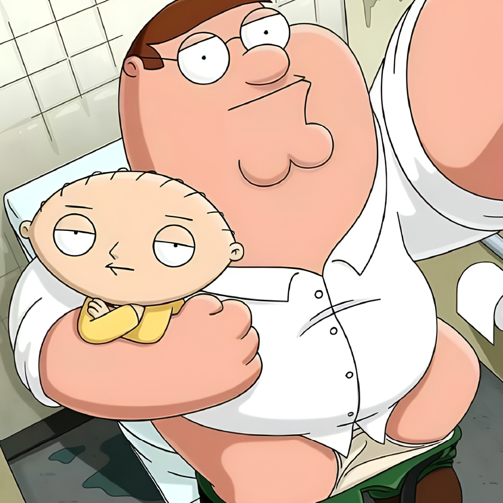

Welcome to the ultimate online destination for all things "Family Guy"! This website is the go-to source for fans of the iconic animated sitcom, offering a wealth of information, trivia, and behind-the-scenes insights into the show's characters, plots, and history. "Family Guy" first premiered on Fox in 1999, and has since become one of the most beloved and successful animated series of all time. Created by Seth MacFarlane, the show follows the lives of the dysfunctional Griffin family, who live in the fictional town of Quahog, Rhode Island. With its irreverent humor, pop culture references, and unique animation style, "Family Guy" has captivated audiences for over two decades. The show has spawned countless catchphrases, iconic moments, and memorable characters, making it a cultural touchstone for generations of fans. This website is dedicated to celebrating and exploring the rich world of "Family Guy". Whether you're a long-time fan or just discovering the show for the first time, you'll find plenty of resources and information here to enhance your viewing experience.  Our extensive character profiles delve deep into the backgrounds and personalities of all your favorite characters, from the lovable goofball Peter Griffin to the diabolical baby Stewie. You'll learn about their likes, dislikes, quirks, and defining moments, as well as trivia and behind-the-scenes insights into their creation and development. In addition to character profiles, we offer detailed episode summaries and analysis, exploring the many hilarious and often controversial storylines that have made "Family Guy" such a beloved and influential show. From the classic "Road to..." episodes featuring Stewie and Brian's misadventures to the unforgettable musical numbers and parodies, we'll take you on a journey through the show's most iconic moments and themes. And that's not all. Our site also features interviews with the show's creators and cast, as well as news and updates on the latest "Family Guy" developments. You'll find a wealth of fan art, memes, and other fun content to explore, as well as a vibrant community of fans to connect with and share your love for the show. So whether you're a die-hard "Family Guy" fanatic or just looking to discover the show's charms for the first time, you've come to the right place. Welcome to the ultimate "Family Guy" resource, where the laughs are always on tap and the fun never stops!